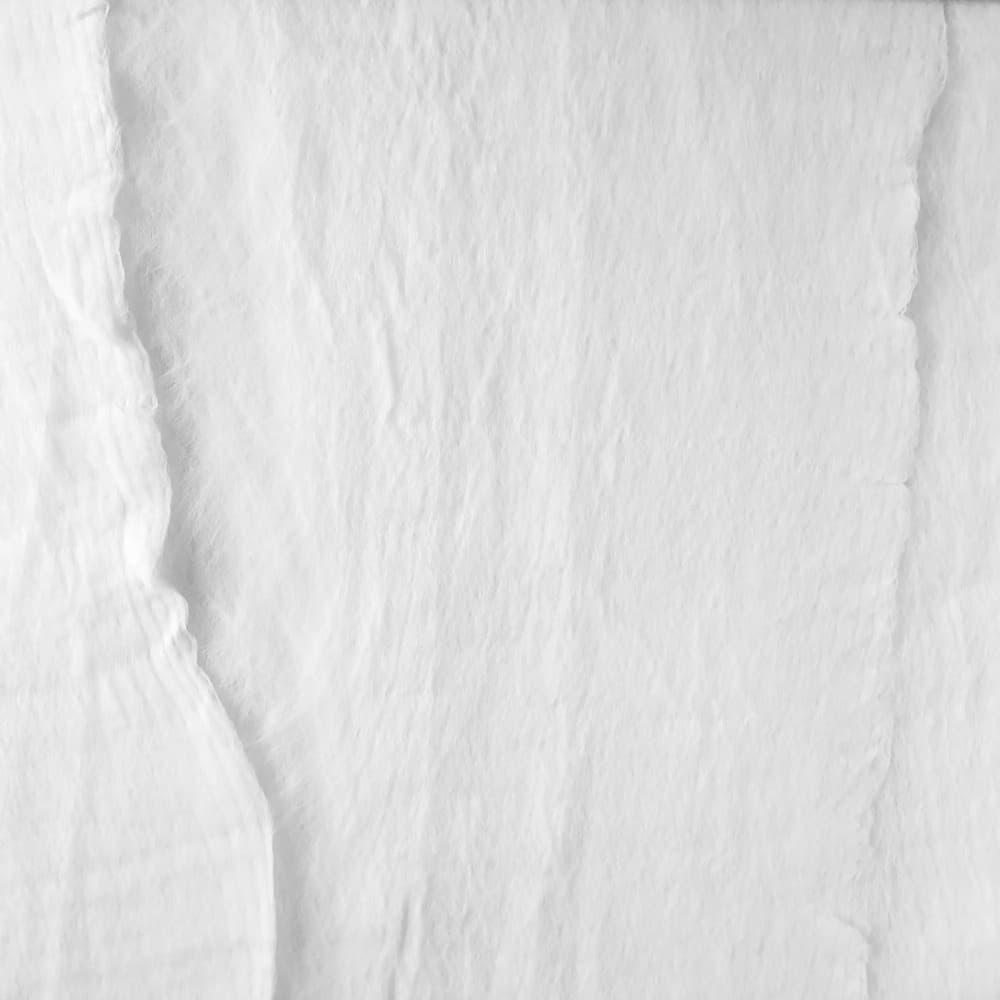
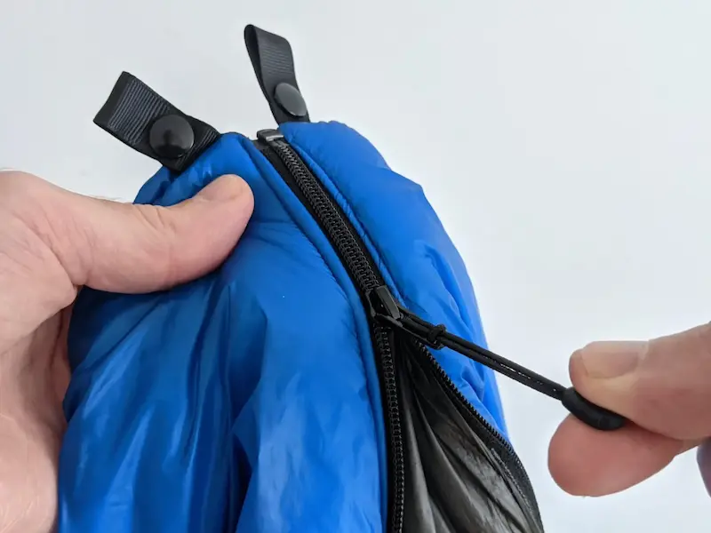
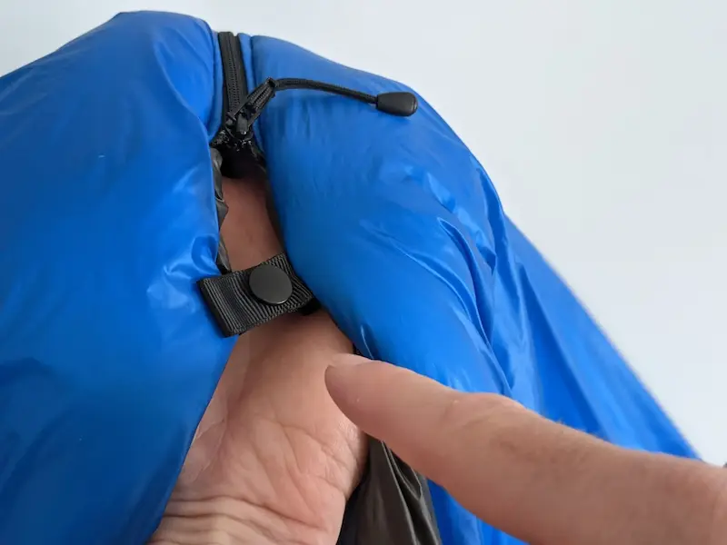
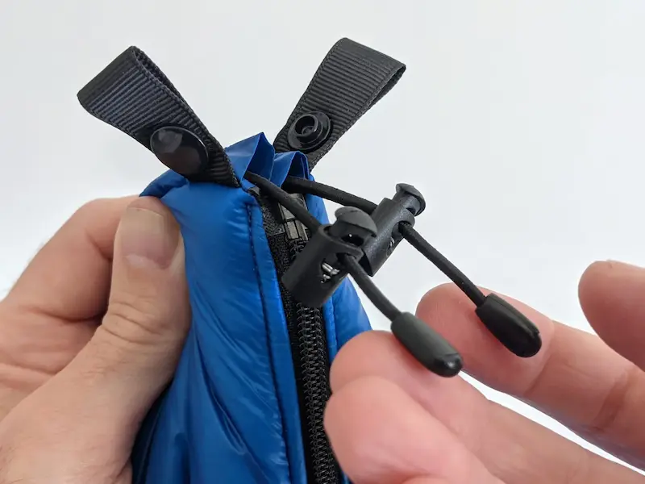
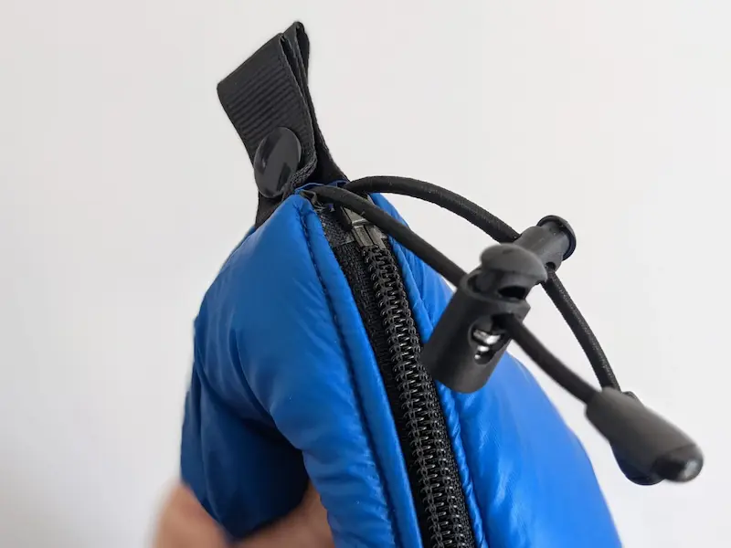
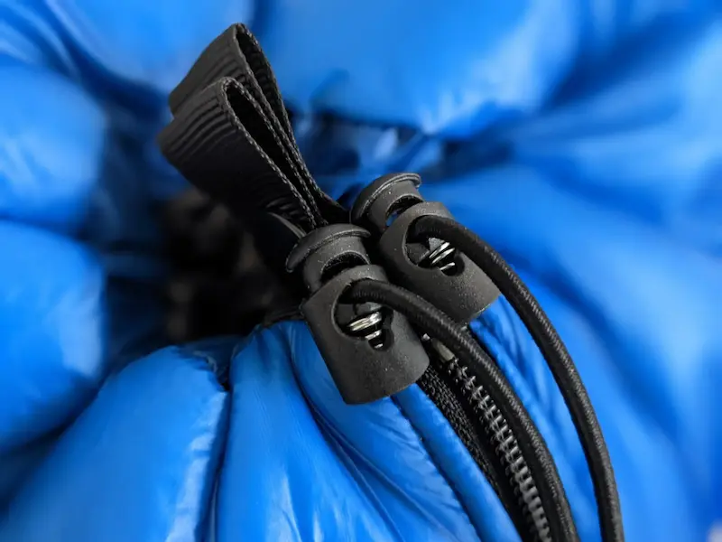
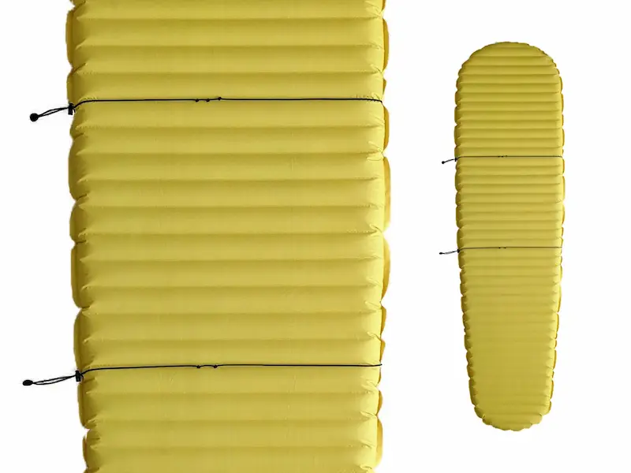
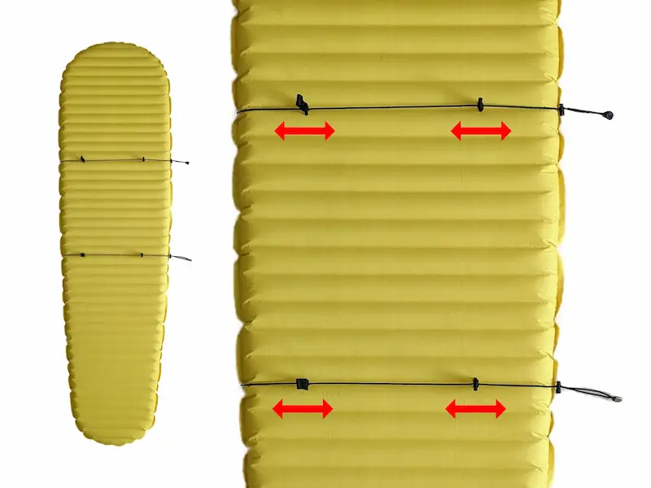

FAQ
Retrouvez les réponses aux questions les plus fréquemment posées sur le Quilt Oro, la livraison, les commandes et le paiement.
Quilt Oro
Questions générales
Qu’est-ce qu’un quilt ?
‘quilt’ est un mot anglo-saxon qui dans le milieu de la randonnée désigne une couette de randonnée.
Le quilt est une alternative au sac de couchage traditionnel. Il est de plus en plus employé par les amateurs de randonnée et de bivouac.
Pour aller plus loin, vous pouvez lire un article sur ce sujet.
Où peut-on voir et acheter le Quilt Oro ?
Le Quilt Oro est vendu exclusivement en ligne sur ce site. Vous ne le retrouverez nulle part ailleurs.
Qu’est-ce que le Climashield® APEX ?
Le Climashield® APEX est l’isolant à filaments continus en polyester le plus léger et le plus efficace disponible sur le marché. Les filaments sont hautement compressibles, conservent leur forme initiale, ne se déchirent pas, ne s’agglutinent pas, ne se séparent pas, et offrent ainsi une efficacité thermique inégalée avec une légèreté accrue.
Un traitement AquaBan® y est appliqué pour améliorer le passage de l’humidité hors de la couette tout en gardant la chaleur corporelle emprisonnée. Cette technologie permet à la couette de rester performante dans des conditions humides et mouillées.

L’isolation synthétique est parfaitement adaptée si vous êtes allergique au duvet ou si vous êtes vegan.
Le chiffre à côté de l’APEX correspond au poids de l’isolant :
- APEX 167 = 167 g/m2 (5 oz/yd2),
- APEX 200 = 200 g/m2 (6 oz/yd2).
À quoi correspondent les températures ?
Il n’existe actuellement aucune norme pour déterminer les performances thermiques des couettes de randonnée contrairement aux sacs de couchage (normes EN 13537 et ISO 23537).
Les températures annoncées correspondent aux températures limites de confort : 2° C pour le Climashield® APEX 167 et -1° C pour l’APEX 200.
La température limite de confort est la température limite à laquelle une personne en position recroquevillée sous sa couette est globalement en équilibre thermique et n’a ni froid ni chaud.
Le confort thermique de votre couette dépend de nombreux autres éléments dont les plus importants sont votre matelas, vos vêtements, votre abri. Il est en effet indispensable d’utiliser un matelas isolant adapté.
De plus, le ressenti de froid n’est pas qu’une histoire de température mais dépend aussi de l’humidité de l’air, du vent en rafale, du fait d’être ou non isolé sous une tente, de l’altération de votre couette avec le temps, et bien évidemment de vous : votre fatigue, votre alimentation, votre hydratation, etc.
L’utilisation de la couette ne s’arrête pas aux températures annoncées : pour des températures plus extrêmes, la couette peut être utilisée en complément d’un drap de sac, d’un sursac, ou même d’un sac de couchage. À titre d’exemple, le SOL Escape Lite Bivvy (155 g) utilisé en drap est un excellent complément au Quilt Oro.
Quelle température choisir ?
Choisir une température plutôt qu’une autre dépend essentiellement de vous, de vos usages, de vos priorités.
Si vous comptez utiliser la couette essentiellement en bivouac et que vous ne savez pas quelle température choisir, nous vous recommandons de choisir -1 °C par défaut, et de choisir 2 °C si vous vous reconnaissez dans l’un des cas suivants :
- vous privilégiez le poids et le volume avant le confort,
- vous pratiquez la marche ultralégère (MUL),
- vous randonnez uniquement l’été et bivouaquez généralement plus proche des vallées que des sommets,
- vous utilisez la couette en complément d’un autre équipement.
Si votre usage de la couette ne se limite pas au bivouac (mais aussi à un usage en refuge, van, camping, etc.), alors nous n’avons pas de recommandation particulière. Vous pouvez tout autant apprécier l’ultralégèreté et la compacité du 2 °C, que le confort du -1 °C.
Quels sont les poids, dimensions, et volumes du Quilt Oro ?
| Short | Regular Slim | Regular | Long | |
|---|---|---|---|---|
| Dimensions | 130×185 cm | 130×200 cm | 140×200 cm | 140×215 cm |
| Largeur aux pieds | 100 cm | 100 cm | 110 cm | 110 cm |
| Poids1 et volume2 -1 °C | 600 g 8 L |
650 g 9 L |
700 g 10 L |
750 g 11 L |
| Poids1 et volume2 +2 °C | 520 g 6 L |
560 g 6,5 L |
600 g 7 L |
640 g 7,5 L |
1 Le poids du Climashield® APEX peut varier de ±10% en
raison des écarts de production, ce qui entraîne des variations de ±30 grammes sur le poids
des couettes.
2 Volume approximatif de la couette compressée.
Quelle taille choisir ?
Certains aiment avoir une couette qui s’arrête au niveau du cou alors que d’autres préfèrent pouvoir se recouvrir tout ou partie de la tête. D’une manière générale, nous vous recommandons de choisir une longueur d’environ 20 cm de plus que votre taille.
Si vous hésitez entre deux longueurs, privilégiez par défaut la plus grande.
Vous hésitez toujours ?
- la taille Regular est la taille standard qui convient à la majorité des personnes ;
- adaptez votre couette à votre matelas : si vous utilisez un matelas de taille Regular (généralement aux alentours de 183 cm), préférez une couette de taille Regular ; si vous utilisez un matelas de taille Long (ou Large) préférez une couette de taille Long, et si vous utilisez un matelas de taille Short (ou Small), préférez une couette de taille Short.
- faites des essais chez vous avec une couette classique 1 place (taille 140×200 cm).
Regular ou Regular Slim ?
Si vous êtes fin, ou si vous n’êtes pas un dormeur agité, ou si vous privilégiez le poids avant tout autre chose, le Regular Slim est fait pour vous. Dans les autres cas, il n’y a pas de règle, c’est selon vos préférences.
Y a-t-il un sac de compression ou de rangement fourni ?
Le Quilt Oro est livré sans sac de compression et sans sac de rangement.
Utilisation
Comment utiliser les attaches avec boutons pression ?
La couette comporte 6 boutons pression :
- les 2 boutons pression du haut permettent d’attacher la couette derrière le cou (il est alors possible de serrer la couette autour du cou grâce au cordon de serrage) ;
- les 2 boutons pression du milieu permettent :
- soit la fixation aux attaches des cordons élastiques qui maintiennent la couette au matelas,
- soit le boutonnage de la couette (pour ceux qui souhaitent fermer entièrement la couette comme un sac de couchage) ;
- le bouton pression suivant (au-dessus de la fermeture éclair) sert à renforcer et protéger la fermeture éclair (cf. comment fermer la footbox) ;
- et le dernier bouton pression sert à fermer l’attache qui prend en sandwich le cordon de serrage de la footbox (cf. comment fermer la footbox).
Comment fermer la footbox ?





Comment placer les cordons élastiques autour du matelas ?
Les cordons élastiques avec attaches se positionnent en quelques secondes et même dans le noir : les noeuds (repères visuels et tactiles) se placent sous le matelas, avec le verrou de cordon à gauche du matelas. En procédant ainsi, les attaches sont disposées dans le bon sens sans avoir à se poser de question. Vous pouvez alors régler les attaches à votre convenance (cf. flèches rouges sur l’image ci-dessous) ce qui aura pour effet de rapprocher ou éloigner la couette de votre corps.


Pourquoi un cordon de serrage au cou ?
La couette dispose d’un cordon élastique de serrage au cou pour ceux qui souhaitent dormir avec la tête en-dehors de la couette tout en limitant au maximum les entrées d’air froid.
Nous avons voulu que ce cordon ne constitue pas une gêne lorsqu’il n’est pas utilisé et qu’il soit facile à trouver au milieu de la nuit. C’est pourquoi il est relativement petit et placé au milieu. Ainsi on ne le sent pas quand il n’est pas utilisé (même en dormant sur le dos) et il reste facilement accessible.
Peut-on mettre son matelas dans la footbox ?
Nous déconseillons de mettre le matelas dans la footbox ou de coincer les bords de la couette sous le matelas car cela pourrait entraîner une usure prématurée du tissu.
Le Quilt Oro peut-il convenir à un enfant ?
Le Quilt Oro n’est pas adapté à un enfant de moins de 14 ans conformément à la norme NF EN 14682.
Le Quilt Oro peut-il convenir à un couple ?
Le Quilt Oro est une couette pour une seule personne. Il ne convient pas à un autre usage.
Entretien
Comment entretenir le Quilt Oro ?
Vous pouvez laver votre couette à la main ou en machine à l’eau froide ou tiède, avec un détergent doux qui ne risque pas d’endommager la finition DWR et une vitesse d’essorage modérée. N’utilisez pas d’assouplissant, d’eau de javel, de revitalisant ou de détachant. Séchez à l’air. Ne pas nettoyer à sec et ne pas repasser.
Même si l’isolant synthétique supporte mieux le lavage que le duvet, nous vous recommandons de ne pas laver systématiquement votre couette après chacune de vos sorties. Lavez-la si vous en ressentez vraiment le besoin.
Comment stocker le Quilt Oro ?
Contrairement à du duvet, le Climashield® APEX supporte de rester compressé. La couette pourrait donc (en théorie) être stockée toute l’année ans un sac de compression.
Cependant, nous ne pouvons pas affirmer que laisser la couette dans un sac de compression soit parfaitement sécure : une usure prématurée risque notamment d’apparaitre aux points de pliage. Par précaution, nous recommandons donc de stocker la couette non compressée.
Commande
Quels sont les moyens de paiement ?
Le paiement de votre commande peut s’effectuer de deux façons :
- soit directement en ligne par par carte bancaire via Stripe (Stripe est une plateforme de traitement des paiements pour le commerce en ligne),
- soit par virement bancaire depuis votre compte bancaire.
Si vous êtes une administration publique française et que vous souhaitez payer par mandat administratif, veuillez nous contacter directement.
Quel est le délai de production de ma commande ?
Le délai de production (temps entre la date de réception de votre commande et la date à laquelle le produit vous est expédié) est indiqué sur la page produit au-dessus du bouton d’achat.
Deux cas sont possibles :
- soit le produit est en stock et prêt à être expédié,
- soit le produit est fabriqué sur commande et sera expédié dans le délai indiqué sur la page produit.
Pour toute demande urgente, je vous invite à nous contacter.
Quel est le délai de préparation de ma commande ?
Le délai de préparation de commande d’un produit en stock est compris entre 0 et 2 jours ouvrés après validation du paiement.
Comment annuler ou modifier ma commande ?
Veuillez nous contacter le plus rapidement possible afin que nous puissions modifier ou annuler votre commande avant expédition.
Comment retourner ma commande ?
Vous avez reçu votre commande mais vous avez changé d’avis ? Pas d’inquiétude, vous avez 14 jours à compter de la date de réception de votre colis pour nous retourner votre commande (frais de retour à votre charge).
Les produits retournés ne doivent pas avoir été utilisés. Ils doivent être dans leur état d’origine et complets, permettant leur re-commercialisation à l’état neuf. Les produits endommagés, salis ou incomplets ne sont pas repris.
Avant toute chose, prévenez-nous du retour de votre commande via le formulaire de contact.
Comment se passe le remboursement en cas d’annulation ou de retour ?
En cas d’annulation ou de retour, votre commande est intégralement remboursée. Dans le cas d’une annulation, nous procèdons au remboursement immédiatement après avoir été informé de votre demande. Dans le cas d’un retour, le remboursement est effectué à la réception du retour de votre commande (dans les conditions prévues ci-dessus).
Livraison
Combien coûte la livraison et quels sont les transporteurs ?
Pour les envois en France, la livraison est effectuée par Colissimo ou Shop2Shop. Pour les envois en-dehors de France, la livraison est prise en charge par Colissimo puis est effectuée par le partenaire local de Colissimo dans le pays de destination.
Montant de participation aux frais de livraison (frais d’emballage, de préparation et d’expédition) :
| Destination | Shop2Shop | Colissimo sans signature | Colissimo avec signature |
|---|---|---|---|
| France métropolitaine | offert | 10 € | 15 € |
| Union Européenne, Monaco, Andorre | – | – | 20 € |
Quel emballage pour l’envoi ?
Les couettes sont emballées dans un emballage plastique spécial pour la VAD. Il est opaque, imperméable, inviolable, 70% recyclé, 100% recyclable, et fabriqué en France.
Comment choisir son relais pickup Shop2Shop ? (France uniquement)
Si vous choisissez l’expédition Shop2Shop, le colis vous sera livré au relais pickup le plus proche de l’adresse renseignée lors de la alidation de commande.
Si vous souhaitez choisir vous-même votre relais pickup :
- localisez votre relais pickup sur le site de Shop2Shop : https://www.chronoshop2shop.fr/fr/trouver-relais-pickup,
- puis indiquez dans le champ « Notes de commande (facultatif) » de la page de validation de commande le nom et l’adresse du relais pickup de votre choix.
Colissimo avec ou sans signature ? (France uniquement)
La livraison avec signature est une preuve de livraison. L’absence de remise en main propre ne permet pas au destinataire de constater une avarie éventuelle et ne pourra donc prétendre à aucune indemnisation en cas de contestation de livraison.
Vous l’aurez compris, pour une distribution plus sûre de votre colis, choisissez la distribution contre signature. Comme avec une lettre recommandée, c’est une sorte d’accusé de réception qui permet de prouver que le colis a bien été livré en main propre. En revanche, vous devez être présent à votre domicile pour réceptionner l’envoi.
Avec ou sans signature, vous bénéficiez d’un suivi de colis.
Pour en savoir plus, consultez l’aide de La Poste.